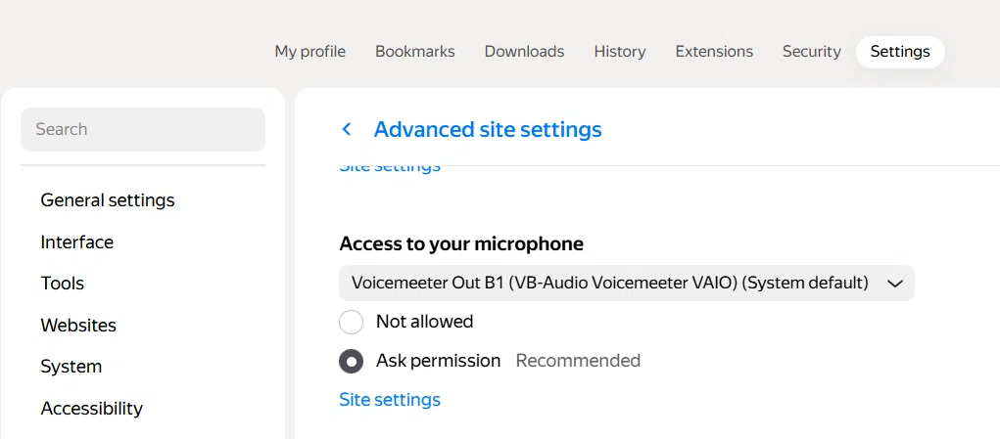

🎛️ VoiceMeeter Banana
Эта инструкция поможет вам настроить VoiceMeeter Banana так, чтобы вы слышали собеседников и в наушниках, и в колонках, а они слышали ваш голос — в Discord, Teams, Skype, браузерах и при работе с двумя чатами одновременно.
1 Windows — вкладка «Воспроизведение»
Где: Правый клик по значку динамика → «Звук» → вкладка «Воспроизведение».
Что должно быть:
| Параметр | Значение |
|---|---|
| Устройство по умолчанию | Voicemeeter Input (VB-Audio Voicemeeter VAIO) |

Все программы отправляют звук в микшер через это устройство.
2 Windows — вкладка «Запись»
Где: То же окно → вкладка «Запись».
Что должно быть:
| Параметр | Значение |
|---|---|
| Устройство по умолчанию | Voicemeeter Out B1 (VB-Audio Voicemeeter VAIO) |

Все программы берут ваш голос из B1.
3 VoiceMeeter Banana — Hardware Input
Где: Верхний ряд дорожек в VoiceMeeter.
| Дорожка | Значение |
|---|---|
| Stereo Input 1 | Ваш реальный микрофон (например, Микрофон (2- USB Audio Device)) |
| Stereo Input 2 и 3 | Пусто (не используются) |
| Virtual Input | Voicemeeter Input — активен |
| Virtual AUX Input | Voicemeeter AUX Input — активен |

4 VoiceMeeter Banana — Hardware Out
Где: Правый верхний угол.
| Кнопка | Значение |
|---|---|
| A1 | Ваши наушники (например, Динамики (2- USB Audio Device)) |
| A2 | Ваши колонки (например, Динамики (High Definition Audio)) |
| A3 | Пусто (не используется) |


5 VoiceMeeter Banana — кнопки на дорожках
Где: Кнопки A1, A2, A3, B1, B2 на каждой дорожке.
🎤 Дорожка микрофона (Stereo Input 1)
| Кнопка | Состояние | Значение |
|---|---|---|
| A1 | Выкл | Вы не слышите себя в наушниках |
| A2 | Выкл | Вы не слышите себя в колонках |
| B1 | Вкл | Ваш голос уходит в Discord / Teams / Skype / Яндекс.Браузер |
| B2 | Выкл | Не нужна, если вы не работаете с двумя чатами |
💻 Дорожка системного звука (Virtual Input)
| Кнопка | Состояние | Значение |
|---|---|---|
| A1 | Вкл | Вы слышите музыку/игру в наушниках |
| A2 | Вкл | Вы слышите музыку/игру в колонках |
| B1 | По желанию | Системный звук уходит собеседникам |
| B2 | Выкл | Не нужна, если вы не работаете с двумя чатами |
Если вы не хотите, чтобы собеседники слышали вашу музыку — отожмите B1 на дорожке Virtual Input.
6 VoiceMeeter Banana — мастер-секция
Где: Ползунки A1, A2, A3, B1, B2 внизу справа.
| Ползунок | Значение |
|---|---|
| A1 | 0 dB |
| A2 | 0 dB (или по вкусу) |
| B1 | 0 dB |
| B2 | 0 dB (если используете) |
Если собеседники говорят, что вас плохо слышно — поднимите B1 (и B2, если используете) до
0 dB.7 Discord — Voice & Video
Где: Настройки → Voice & Video.
| Параметр | Значение |
|---|---|
| Microphone | Voicemeeter Out B1 (VB-Audio Voicemeeter VAIO) |
| Speaker | Voicemeeter Input (VB-Audio Voicemeeter VAIO) |
| Automatically Adjust Input Sensitivity | Выключить |
| Input Profile | Custom |

8 Microsoft Teams — Devices
Где: Настройки → Devices.
| Параметр | Значение |
|---|---|
| Speaker | Voicemeeter Input (VB-Audio Voicemeeter VAIO) |
| Microphone | Voicemeeter Out B1 (VB-Audio Voicemeeter VAIO) |
| Automatically adjust mic sensitivity | Выключить |
| Noise suppression | По вашему выбору |

9 Skype — Звуковое устройство
Где: Параметры → Звуковое устройство.
| Параметр | Значение |
|---|---|
| Динамик | Voicemeeter Input (VB-Audio Voicemeeter VAIO) |
| Микрофон | Voicemeeter Out B1 (VB-Audio Voicemeeter VAIO) |
| Звонок | Voicemeeter Input (VB-Audio Voicemeeter VAIO) |

10 Яндекс Браузер
Где: Настройки → Сайты → Расширенные настройки сайтов → Доступ к микрофону.
| Параметр | Значение |
|---|---|
| Микрофон | Voicemeeter Out B1 (VB-Audio Voicemeeter VAIO) |
| Разрешение | Запрашивать разрешение (рекомендуется) |

Яндекс Браузер работает на движке Chromium. Если в списке нет
Voicemeeter Out B1 — проверьте, что VoiceMeeter запущен, и перезапустите браузер.11 Работа с двумя чатами одновременно (Яндекс + Firefox)
Если вам нужно сидеть в двух голосовых чатах сразу и при этом чтобы участники обоих чатов слышали друг друга — используется схема с двумя виртуальными выходами: B1 и B2.
Важно: В одном браузере (две вкладки Chromium) эта схема не работает — обе вкладки используют один и тот же микрофон. Поэтому чаты нужно разнести по разным браузерам: один в Яндекс.Браузере, второй в Firefox.
Настройки в браузерах
| Браузер | Чат | Микрофон |
|---|---|---|
| Яндекс.Браузер | Чат A | Voicemeeter Out B1 (VB-Audio Voicemeeter VAIO) |
| Firefox | Чат B | Voicemeeter Out B2 (VB-Audio Voicemeeter VAIO) |
Настройки кнопок в VoiceMeeter
| Дорожка | A1 | A2 | B1 | B2 |
|---|---|---|---|---|
| Stereo Input 1 (микрофон) | — | — | Вкл | Вкл |
| Virtual Input (звук из Яндекса) | Вкл | Вкл | Выкл | Вкл |
| Virtual AUX Input (звук из Firefox) | Вкл | Вкл | Вкл | Выкл |
Мастер-секция
| Ползунок | Значение |
|---|---|
| B1 | 0 dB |
| B2 | 0 dB |
Как это работает:
• Ваш голос → B1 → слышат участники Яндекс-чата.
• Ваш голос → B2 → слышат участники Firefox-чата.
• Голоса из Яндекс-чата → Virtual Input → B2 → уходят в Firefox.
• Голоса из Firefox-чата → Virtual AUX Input → B1 → уходят в Яндекс.
Итог: участники обоих чатов слышат друг друга.
• Ваш голос → B1 → слышат участники Яндекс-чата.
• Ваш голос → B2 → слышат участники Firefox-чата.
• Голоса из Яндекс-чата → Virtual Input → B2 → уходят в Firefox.
• Голоса из Firefox-чата → Virtual AUX Input → B1 → уходят в Яндекс.
Итог: участники обоих чатов слышат друг друга.
Если слышно эхо собственного голоса: проверьте, что на дорожке
Virtual Input кнопка B1 отжата, а на дорожке Virtual AUX Input кнопка B2 отжата. Это критично — иначе образуется петля.
Если вас не слышно в Firefox: проверьте, что в мастер-секции ползунок
B2 поднят до 0 dB (не на -60 dB).
🔑 Итоговая схема сигнала
Микрофон → VoiceMeeter (Stereo Input 1) → B1 → Дискорд/Teams/Skype/Яндекс.Браузер
↓
Собеседники слышат вас
Собеседники → Voicemeeter Input → VoiceMeeter (Virtual Input) → A1 (наушники) + A2 (колонки)
↓
Вы слышите их в наушниках и колонках
⚠️ Важные предупреждения
Эхо: Если играют колонки и включён микрофон — будет эхо. Используйте закрытые наушники или выключайте колонки, когда говорите.
B1 и B2: Если вы не работаете с двумя чатами — не трогайте B2. Он нужен только для схемы с двумя браузерами.
Один B1 на всех: Если одновременно открыты Discord, Teams и Skype — все они используют один и тот же B1. Один и тот же звук идёт во все три программы.
Громкость B1/B2: Если вас плохо слышно — поднимите ползунки B1 и B2 в мастер-секции до
0 dB.✅ Чек-лист «Всё работает»
- Windows Playback →
Voicemeeter Input(по умолчанию) - Windows Recording →
Voicemeeter Out B1(по умолчанию) - VoiceMeeter: микрофон в Stereo Input 1
- VoiceMeeter: A1 = наушники, A2 = колонки
- VoiceMeeter: B1 нажата на дорожке микрофона
- VoiceMeeter: A1 и A2 нажаты на Virtual Input
- Discord: Mic = B1, Speaker = Input
- Teams: Mic = B1, Speaker = Input
- Skype: Mic = B1, Speaker = Input
- Яндекс Браузер: Mic = B1
- Два чата: Яндекс = B1, Firefox = B2, на Virtual Input нажата B2, на Virtual AUX Input нажата B1, ползунки B1 и B2 на 0 dB
Если все пункты отмечены — настройка завершена. Можно общаться!